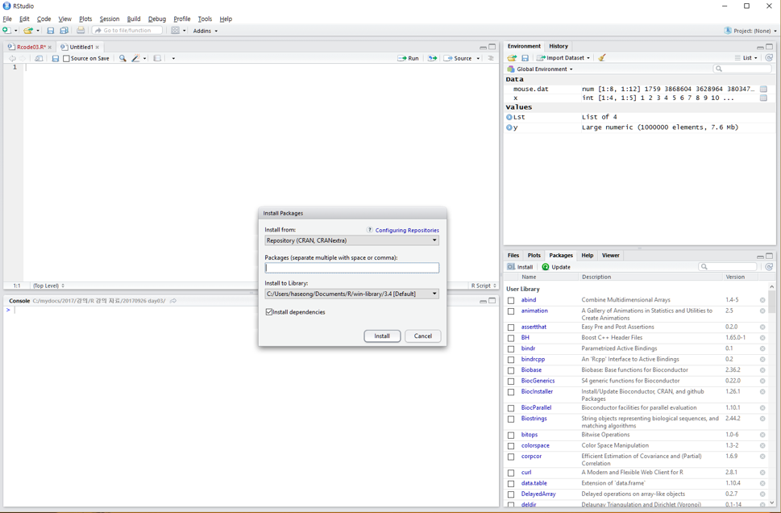

2 Introduction and installation of R/Rstudio
2.1 What is R / Rstudio

R은 통계나 생물통계, 유전학을 연구하는 사람들 사이에서 널리 사용되는 오픈소스 프로그래밍 언어 입니다. Bell Lab에서 개발한 S 언어에서 유래했으며 엄청나게 많은 라이브러리 (다른 사람들이 만들어 놓은 코드)가 있어서 쉽게 가져다 사용할 수 있습니다. R은 복잡한 수식이나 통계 알고리즘을 간단히 구현하고 사용할 수 있으며 C, C++, Python 등 다른 언어들과의 병행 사용도 가능합니다. R은 IEEE에서 조사하는 Top programming languages에서 2018년 7위, 2019년 5위, 2020년 6위로 꾸준히 높은 사용자를 확보하며 빅데이터, AI 시대의 주요한 프로그래밍 언어로 사용되고 있습니다.

R은 데이터를 통계분석에 널리 사용되는데 이는 데이터를 눈으로 확인하기 위한 visualization 이나 벡터 연산 등의 강력한 기능 때문에 점점 더 많은 사람들이 사용하고 있습니다. 기존에는 속도나 확장성이 다른 언어들에 비해 단점으로 지적되었으나 R 언어의 계속적인 개발과 업데이트로 이러한 단점들이 빠르게 보완되고 있습니다.
R 사용을 위해서는 R 언어의 코어 프로그램을 먼저 설치하고 그 다음 R 언어용 IDE(Integrated Development Environment)인 RStudio 설치가 필요합니다.
2.2 R installation
- R (https://www.r-project.org/) 사이트에 접속 후 좌측 메뉴 상단에 위치한 CRAN 클릭.
- 미러 사이트 목록에서 Korea의 아무 사이트나 들어감

- Download R for Windows를 (windows OS의 경우) 클릭
- base 링크 또는 install R for the first time 클릭

- Download R 4.0.4 for Windows 링크로 실행 프로그램 다운로드 (2021.3 현재 R 버전은 4.0.4). 로컬 컴퓨터에 Download 된 R-4.0.4-win.exe 를 실행하고 설치 프로그램의 지시에 따라 R 언어 소프트웨어 설치를 완료합니다.

2.3 Rstudio installation
Rstudio는 R 언어를 위한 오픈소스 기반 통합개발환경(IDE)으로 R 프로그래밍을 위한 편리한 기능들을 제공해 줍니다. R언어가 주목을 받고 두터운 사용자 층을 확보할 수 있게된 핵심 동력이 Rstudio 입니다. 자체적으로 오픈소스 개발팀이 있으며 dplyr, ggplot, shiny 등의 데이터 분석 및 소통을 위한 주요 패키지를 개발하였고 정기적으로 conference 개최를 하면서 기술 보급의 핵심 역할을 하고 있습니다. 다음과 같은 방법으로 RStudio를 설치할 수 있습니다.
https://www.rstudio.com/ 접속, 상단의 Products > RStudio 클릭 RStudio 페이지로 이동동
하단 RStudio Desktop 선택

- Open Source Edition의 Download RStudio Desktop 클릭
- 하단 DOWNLOAD RSTUDIO FOR WINDOWS 클릭
- 2021.03현재 version 1.4.1106, 로컬 컴퓨터에 다운로드된 RStudio-1.4.1106.exe를 실행하고 설치 가이드에 따라 설치 완료합니다.
2.4 Rstudio interface
- 아래 그림의 좌측 상단의 공간은 코드편집창, 좌측 하단은 콘솔창 입니다.

2.5 New file & Set working directory
새로운 R 파일 (또는 다른 형태의 파일)은 File > New File > R Script 의 메뉴를 통해서 생성할 수 있습니다. 일반적으로 이렇게 새로운 파일을 만들고 코드를 작성하기 전에 해당 작업을 수행하기 위한 작업 디렉토리를 설정할 필요가 있습니다.
getwd()
dir()
setwd("C:\\rprog2021")
getwd()
dir()또는 아래와 같이 RStudio 메뉴 에서 설정

2.6 New project
위와 같이 파일을 만들고 작업 디렉토리를 설정하는 것보다 프로젝트를 만들고 파일들을 관리하는 것이 여러모로 편리할 때가 많습니다. File > New Project를 선택하면 아래와 같은 팝업창이 나타납니다.

여기서 New Directory를 선택하고 (또는 기존 디렉토리가 있을 경우 Existing Directory 선택) New Project를 클릭하면 다음과 같이 디렉토리 이름과 디렉토리가 생성될 위치를 지정할 수 있습니다. 이름은 Rprog2021로 하고 C:/mydocs/2021/dev/ 이 곳에 생성되도록 하겠습니다.

그럼 아래와 같이 새로운 디렉토리가 생성되며 Rprog2021.Rproj 파일이 생성됩니다. 이제 언제든 해당 프로젝트를 작업할 때 이 Proj 파일을 실행하면 RStudio가 실행되고 최종 작업했던 상태에서 시작하게 됩니다. 작업 디렉토리 역시 Proj 파일이 위치한 디렉토리 위치로 자동으로 설정 됩니다.
2.7 Keyboard shortcuts
- 참고사이트
- https://support.rstudio.com/hc/en-us/articles/200711853-Keyboard-Shortcuts
- Tools –> Keyboard shortcut Quick Reference (
Alt + Shift + K)
- 코드편집창 이동 (
Ctrl+1) 콘솔창 이동(Ctrl+2) - 한 줄 실행 (
Ctrl+Enter) - 주석처리 (
Ctrl + Shift + C)- 또는
#으로 시작하는 라인
- 또는
- 실습
- 코드편집창에서 다음 입력

- 단축키
Ctrl + enter로 코드 실행 - 단축키
Ctrl + 2로 커서 콘솔창으로 이동 x값x+y값 확인- 단축키
Ctrl + 1로 코드편집창 이동 - 단축키
Ctrl + Shift + C사용
# x <- 10
# y <- 202.8 Hello world
mystring <- "Hello \n world!"
cat(mystring)
print(mystring)2.9 Help
R의 장점 중 하나로 방대한 양의 도움말 페이지가 제공됩니다. ? 명령을 사용하면 되며 구글이나 웹에서도 도움을 얻을 수 있습니다.
?cat
?print
?mean
help("mean")
example("mean")
help.search("mean")
help(package="MASS")2.10 R packages
R은 package라 불리는 다양한 함수 라이브러리를 사용할 수 있습니다. 예를 들어 sum() 이나 sd()와 같은 함수는 stats이라는 패키지에서 구현된 함수 입니다. stats 패키지는 R이나 Rstudio를 실행할 경우 기본으로 불려지는 패키지로서 별도로 불러오는 과정이 필요하지 않습니다. 이러한 패키지는 인터넷의 repository에서 구할 수 있으며 대표적인 repository는 The Comprehensive R Archive Network (CRAN) (http://cran.r-project.org/web/views/) 와 생물학자를 위한 Bioconductor (http://www.bioconductor.org/) 가 있습니다. 이러한 패키지의 설치는 아래와 같이 RStudio를 이용하거나 콘솔창에서 install.packages() 함수를 이용할 수 있습니다.

- UsingR package installation

패키지를 설치하고 사용하기 위해서는 library() 함수를 사용해서 관련 명령어를 사용하기 전에 미리 loading 해 두어야 합니다. 한 번 로딩으로 작업 세션이 끝날때까지 관련된 함수를 사용할 수 있으나 R 세션이나 RStudio를 재시작 할 경우 다시 로딩해야 사용할 수 있습니다.
library(UsingR)- R 설치 디렉토리
- R 패키지 설치 디렉토리
.libPaths()
path.package()2.11 Data sets
대부분의 패키지는 함수와 함께 관련된 도움말, 예제, 그리고 데이터셋을 같이 제공해 줍니다. library() 함수를 사용할 때 자동으로 같이 로딩이 되며 data() 함수를 사용해서 사용자 작업공간에 복사본을 만들어서 사용할 수 있습니다.
head(rivers)
length(rivers)
class(rivers)
data(rivers)
data(package="UsingR")
library(HistData)
head(Cavendish)
str(Cavendish)
head(Cavendish$density2)
data(package="HistData")